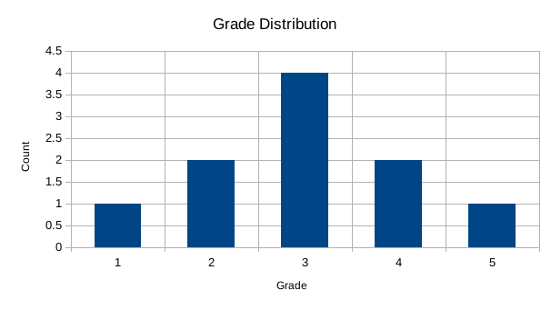
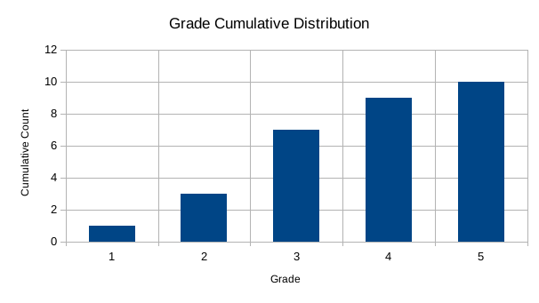
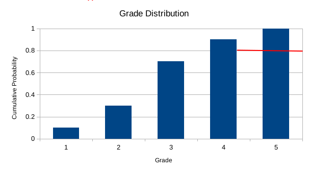
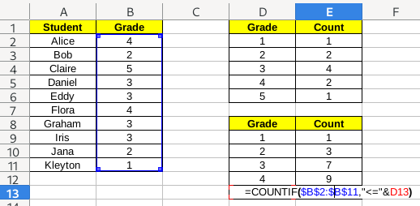

3.1 Cumulative probabilities
Ordered data has extra structure, compared to categorical data. For any two values x and y, we can determine whether x \geq y or x \leq y. Using this kind of data, we can also make histograms just as before.
1 Histograms
As example data, let’s use the set of grades of a classroom. Possible grades are 1, 2, 3, 4 and 5. While these are written as numbers, they are actually categories, since the meaning of these are more similar to grades like A, B, C… than to strict numeral grades, for example, from 0 to 100.
| Student | Grade |
|---|---|
| Alice | 4 |
| Bob | 2 |
| Claire | 5 |
| Daniel | 3 |
| Eddy | 3 |
| Flora | 4 |
| Graham | 3 |
| Iris | 3 |
| Jana | 2 |
| Kleyton | 1 |
The count distribution table for this data is:
| Grade | Count |
|---|---|
| 1 | 1 |
| 2 | 2 |
| 3 | 4 |
| 4 | 2 |
| 5 | 1 |
The histogram for this data would be:

The only difference between this histogram and those for categorical data is that the order of labels on the horizontal axis is important. Usually, these labels should increase from the left to the right.
2 Cumulative histograms
The first kind of graph that is particular to ordered data are cumulative histograms. To build these, we write a table like the distribution table from before, but instead of counting the numbers for each grade, we count the numbers up to that grade:
| Grade | Cumulative Count |
|---|---|
| 1 | 1 |
| 2 | 3 |
| 3 | 7 |
| 4 | 9 |
| 5 | 10 |
In this table, the cumulative count for 3 is 7, because this is the amount of people who have a grade that is 3 or less. The histogram for this data is:
 # Quantiles
The main usage for cumulative distribution histograms is the determination of quantiles. Quantiles are used to answer questions such as: which grade to you need to have so you are in the top 10% of grades? which grade do you need to have so you are in the bottom 30%?
To better translate to these questions, let’s rewrite the table above to probabilities:
| Grade | Cumulative Probability |
|---|---|
| 1 | 0.1 |
| 2 | 0.3 |
| 3 | 0.7 |
| 4 | 0.9 |
| 5 | 10 |
and also the graph:
The way to use this graph is the following. Suppose the question is: which grade you need to that you are in the bottom 20% of grades. This means that your grade is the same or larger than 20% of people. Which means you want to find the first bar that is the same size or larger than 0.2. To find this, find the value 0.2, and draw a line from left to right, and choose the first bar that is taller or equal to this value.
In this case, the result will be 1, since this is the last bar that is covered before meeting a wall. If we do 30% instead, the result will shift to 2.
To answer the question about top 20%, the process is similar. You count 20% from the top, that is, 80%, and draw a line from the right, until if faces the last wall. The result is the last bar that is covered, in this case, 5. If we shift the question to top 30% instead, the line will go to the 3 bar, and the result will be 4.

3 Median
A particular case of quantile is the median, which is the point defining the 50% quantile. In principle, it is the point that divides data in half: half is smaller than it, and half is bigger than it. In practice, it is ambigous since there are two ways you can define it:
- The first point where 50% of the data is smaller or equal to it
- The last point where 50% of the data is larger or equal to it
When using it in an ambiguous context, one should be clear about which one is being used.
4 Cumulative counts in Excel
Cumulative counts work just like counts. We will still use the COUNTIF/СЧЁТЕСЛИ functions, but the condition will be different. Instead of just selecting the cell we want to use as criterion as second argument, we will build the string using the less-than sign <= and the value of the cell. To put both together, we use the & operator. So, for example, in the image below, the result is "<="&D13, which should be equivalent to "<=5", since the value at D13 is 5.

5 Exercise
Download this file and:
- Fill the first table with probabilities, and create a probabilities histogram.
- Fill the second table with cumulative probabilities, and create a cumulative probabilities histogram.
- By looking at the second histogram, fill manually the third table, by writing the correct values.